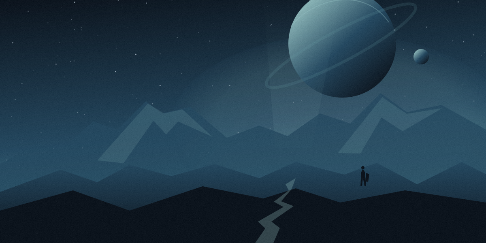
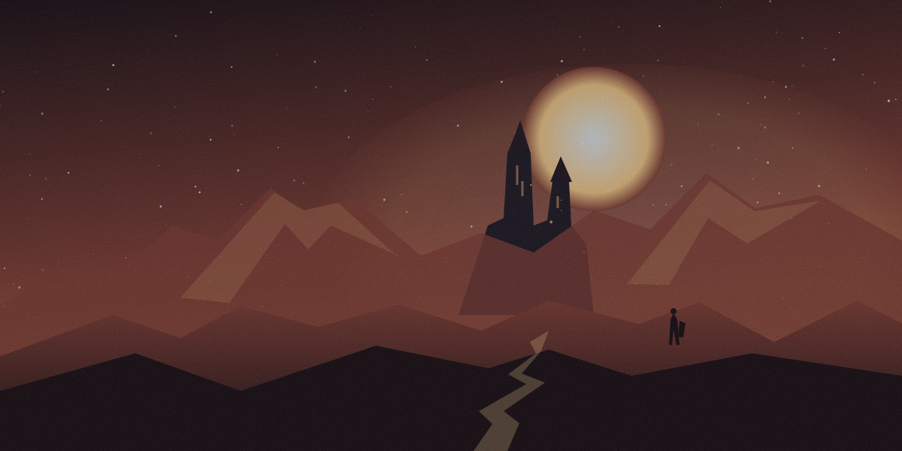

Find it. Automatically.
Automated source indexing brings Online-Fix and FitGirl listings into one searchable library. Leave the endless tabs behind.
sources.sync()
Indexing your next adventure↗
Less searching. Less setup. More playing.
Scrape, download, and manage your favorite games
from Online-Fix and FitGirl — all in one place.
Windows 10 / 11 · 64-bit • Newest build on GitHub Releases
All your games, right where you left them.

A new world is waiting for you.
No games match your search. Try another title or source.

From finding your next game to hitting play.
A smoother workflow, from start to finish.
Automated source indexing brings Online-Fix and FitGirl listings into one searchable library. Leave the endless tabs behind.
A built-in torrent workflow with a clear queue, pause and resume controls, and bandwidth limits that fit your connection.
Designed to detect compatible game fixes and streamline patch setup, with a clear path from installation to multiplayer.
A clean, ad-free interface designed for low overhead. Keep your resources for the game, with launcher updates in one place.
A look at the planned launcher experience. Final features will be confirmed with the first release.
Browse supported catalogs side by side. Source tags keep every game’s origin clear, so you always know what you’re adding.
Try the source filters ↗Multiplayer-focused game listings
Repack catalog integration
Planned integrations · Status is illustrative, not a live health check.
A familiar home on your Windows PC.
Final requirements arrive with the first release.
The essentials, without the fine print.
The launcher is designed to read supported source listings and organize game metadata in one searchable catalog. Source availability and catalog contents can change. The preview above uses fictional games and does not contact third-party sources.
No launcher can guarantee the safety of third-party files. Review the source and file details, scan downloads with up-to-date security software, and only download content you are authorized to access.
Treat the alert seriously. A detection can be a false positive or a real threat; do not assume either. Keep the file quarantined, verify its origin, and do not disable your antivirus or add blanket exclusions to run it.
The planned setup lets you choose separate download and game library folders. Use a location with enough free space and write access. Folder controls in the final app will be documented with the release.
Automated launcher updates are planned to keep the app current with minimal interruption. Update controls and release notes will be available with the first build.
The Windows installer is published on the project’s GitHub Releases page, and the download buttons above always link to the newest build. Each release lists the version, the file size and a SHA-256 checksum you can verify before installing.
A better home for your next adventure.
Download for Windows Windows 10 / 11 · GitHub Releases